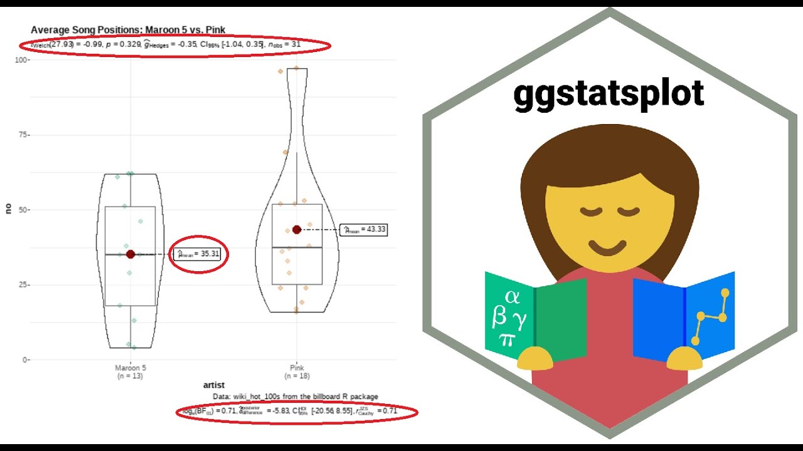
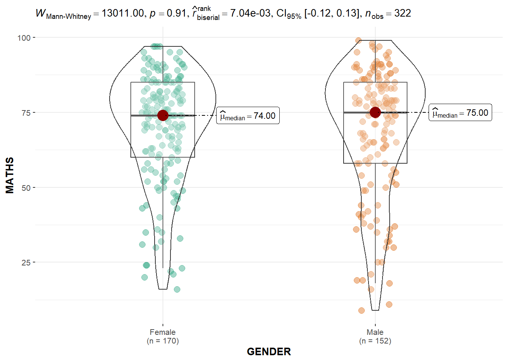
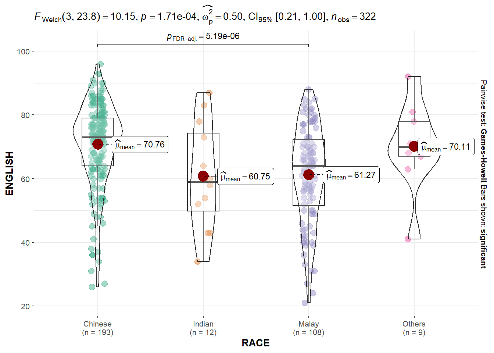
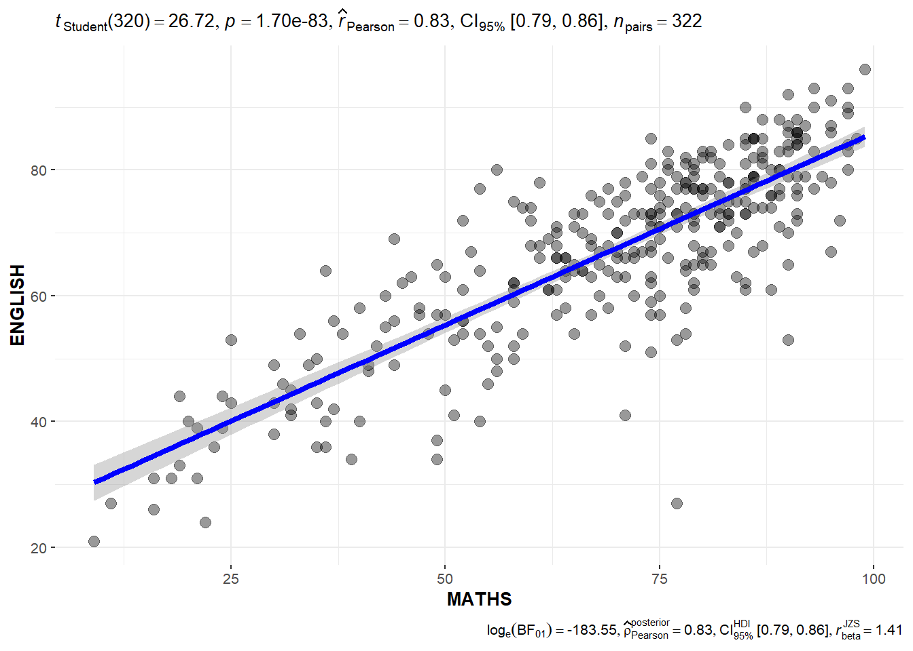
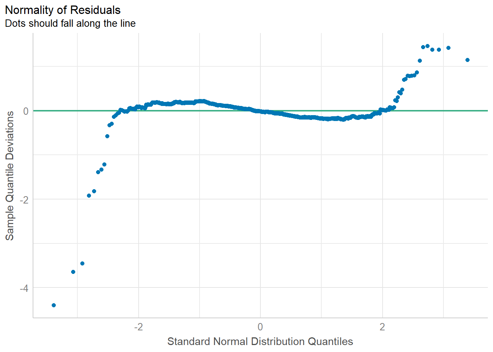
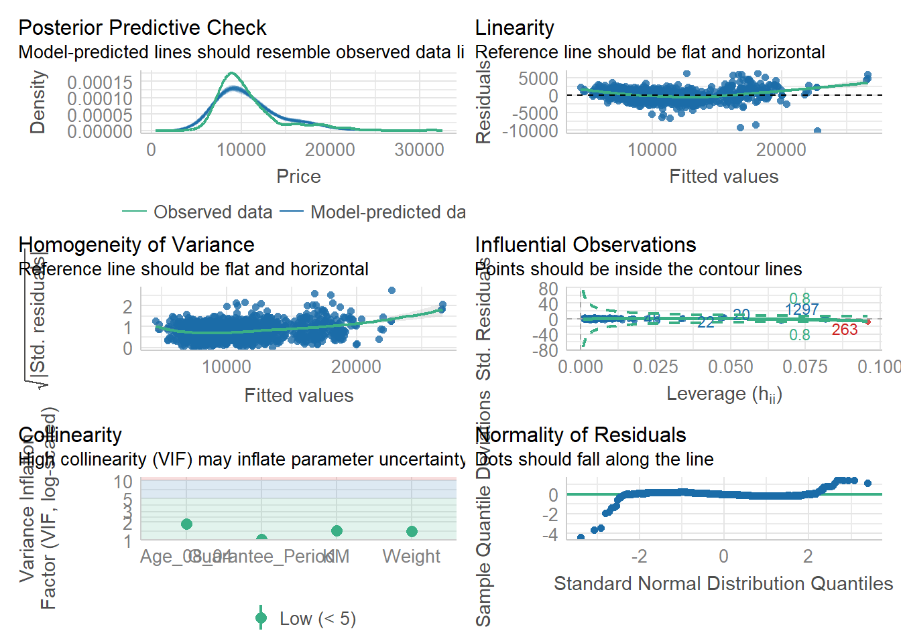

code block
pacman::p_load(ggstatsplot, tidyverse)Lesson 4b: Visual Statistical Analysis

| Work done | Hands-on Exercise 4b |
| Hours taken | ⏱️⏱️ (hospitalisation leave) |
| Questions | 0 |
| How do I feel? | 😣 |
| What do I think? | I feel genuinely lost but this is an important topic to help improve the data visualisations with statistical tests (that was something I struggled to show in Take-home_Ex01 and Take-home_Ex02). |
ggstatsplot is an extension of ggplot2 package for creating graphics with details from statistical tests included in the information-rich plots themselves.
To provide alternative statistical inference methods by default.
To follow best practices for statistical reporting. For all statistical tests reported in the plots, the default template abides by the APA gold standard for statistical reporting.
The code chunk below uses p_load() of pacman package to check if the following R packages are installed in the computer. If they are, then they will be launched into R.
tidyverse, a family of R packages for data science process,
ggstatsplot, an extension of ggplot2 to create graphics with details from statistical tests included in the information-rich plots themselves.
pacman::p_load(ggstatsplot, tidyverse)This section is taken from Hands-on_Ex02 as we are using the same data set.
The data set, Exam_data.csv, contains the Year-end examination grades of a cohort of primary 3 students from a local school, and is uploaded as exam_data.
In the code chunk below, read_csv() of readr package is used to import Exam_data.csv data file into R and save it as an tibble data frame called exam_data.
exam <- read_csv("data/Exam_data.csv")
exam# A tibble: 322 × 7
ID CLASS GENDER RACE ENGLISH MATHS SCIENCE
<chr> <chr> <chr> <chr> <dbl> <dbl> <dbl>
1 Student321 3I Male Malay 21 9 15
2 Student305 3I Female Malay 24 22 16
3 Student289 3H Male Chinese 26 16 16
4 Student227 3F Male Chinese 27 77 31
5 Student318 3I Male Malay 27 11 25
6 Student306 3I Female Malay 31 16 16
7 Student313 3I Male Chinese 31 21 25
8 Student316 3I Male Malay 31 18 27
9 Student312 3I Male Malay 33 19 15
10 Student297 3H Male Indian 34 49 37
# ℹ 312 more rowsgghistostats() methodIn the code chunk below, gghistostats() is used to to build an visual of one-sample test on English scores.

set.seed(1234)
gghistostats(
data = exam,
x = ENGLISH,
type = "bayes",
test.value = 60,
xlab = "English scores"
) A Bayes factor is the ratio of the likelihood of one particular hypothesis to the likelihood of another. It can be interpreted as a measure of the strength of evidence in favor of one theory among two competing theories.
That’s because the Bayes factor gives us a way to evaluate the data in favor of a null hypothesis, and to use external information to do so. It tells us what the weight of the evidence is in favor of a given hypothesis.
When we are comparing two hypotheses, H1 (the alternate hypothesis) and H0 (the null hypothesis), the Bayes Factor is often written as B10.
The Schwarz criterion is one of the easiest ways to calculate rough approximation of the Bayes Factor.
Bayes factors have been offered by Bayesians as alternatives to P values (or significance probabilities) for testing hypotheses and for quantifying the degree to which observed data support or conflict with a hypothesis.
A Bayes Factor can be any positive number. What the Bayes factor actually measures is the change in the odds in favor of the hypothesis when going from the prior to the posterior.
ggbetweenstats()In the code chunk below, ggbetweenstats() is used to build a visual for two-sample mean test of Maths scores by gender.

ggbetweenstats(
data = exam,
x = GENDER,
y = MATHS,
type = "np",
messages = FALSE
) ggbetweenstats() methodIn the code chunk below, ggbetweenstats() is used to build a visual for One-way ANOVA test on English score by race.
“ns” → only non-significant
“s” → only significant
“all” → everything

ggbetweenstats(
data = exam,
x = RACE,
y = ENGLISH,
type = "p",
mean.ci = TRUE,
pairwise.comparisons = TRUE,
pairwise.display = "s",
p.adjust.method = "fdr",
messages = FALSE
)ggscatterstats()In the code chunk below, ggscatterstats() is used to build a visual for Significant Test of Correlation between Maths scores and English scores.

ggscatterstats(
data = exam,
x = MATHS,
y = ENGLISH,
marginal = FALSE,
)ggbarstats() methodsIn the code chunk below, the Maths scores is binned into a 4-class variable by using cut().
exam1 <- exam %>%
mutate(MATHS_bins =
cut(MATHS,
breaks = c(0,60,75,85,100))
)In this code chunk below ggbarstats() is used to build a visual for Significant Test of Association.

ggbarstats(exam1,
x = MATHS_bins,
y = GENDER)In this section, you will learn how to visualise model diagnostic and model parameters by using parameters package.
The code chunk below uses p_load() of pacman package to check if the following R packages are installed in the computer. If they are, then they will be launched into R.
readxl, read_xls() of readxl package is used to import the Excel worksheet,
performance, that provides utilities for computing indices of model quality and goodness of fit. These include measures like r-squared (R2), root mean squared error (RMSE) or intraclass correlation coefficient (ICC) , but also functions to check (mixed) models for overdispersion, zero-inflation, convergence or singularity,
parameters, contains utilities for processing the parameters of various statistical models, and
see, helps users to utilize visualisation for more informative, communicable, and well-rounded scientific reporting.
pacman::p_load(readxl, performance, parameters, see)The dataset ToyotaCorolla.xls contains data on used cars on sale during the late summer of 2004 in the Netherlands. It has 1436 records containing attributes includingPrice, Age, Kilometers, Horsepower, and other specifications.
In the code chunk below, read_csv() of readr package is used to import Exam_data.csv data file into R and save it as an tibble data frame called exam_data.
car_resale <- read_xls("data/ToyotaCorolla.xls",
"data")
car_resale# A tibble: 1,436 × 38
Id Model Price Age_08_04 Mfg_Month Mfg_Year KM Quarterly_Tax Weight
<dbl> <chr> <dbl> <dbl> <dbl> <dbl> <dbl> <dbl> <dbl>
1 81 TOYOTA … 18950 25 8 2002 20019 100 1180
2 1 TOYOTA … 13500 23 10 2002 46986 210 1165
3 2 TOYOTA … 13750 23 10 2002 72937 210 1165
4 3 TOYOTA… 13950 24 9 2002 41711 210 1165
5 4 TOYOTA … 14950 26 7 2002 48000 210 1165
6 5 TOYOTA … 13750 30 3 2002 38500 210 1170
7 6 TOYOTA … 12950 32 1 2002 61000 210 1170
8 7 TOYOTA… 16900 27 6 2002 94612 210 1245
9 8 TOYOTA … 18600 30 3 2002 75889 210 1245
10 44 TOYOTA … 16950 27 6 2002 110404 234 1255
# ℹ 1,426 more rows
# ℹ 29 more variables: Guarantee_Period <dbl>, HP_Bin <chr>, CC_bin <chr>,
# Doors <dbl>, Gears <dbl>, Cylinders <dbl>, Fuel_Type <chr>, Color <chr>,
# Met_Color <dbl>, Automatic <dbl>, Mfr_Guarantee <dbl>,
# BOVAG_Guarantee <dbl>, ABS <dbl>, Airbag_1 <dbl>, Airbag_2 <dbl>,
# Airco <dbl>, Automatic_airco <dbl>, Boardcomputer <dbl>, CD_Player <dbl>,
# Central_Lock <dbl>, Powered_Windows <dbl>, Power_Steering <dbl>, …The code chunk below is used to calibrate a multiple linear regression model by using lm() of Base Stats of R.
model <- lm(Price ~ Age_08_04 + Mfg_Year + KM +
Weight + Guarantee_Period, data = car_resale)
model
Call:
lm(formula = Price ~ Age_08_04 + Mfg_Year + KM + Weight + Guarantee_Period,
data = car_resale)
Coefficients:
(Intercept) Age_08_04 Mfg_Year KM
-2.637e+06 -1.409e+01 1.315e+03 -2.323e-02
Weight Guarantee_Period
1.903e+01 2.770e+01 In the code chunk, check_collinearity() of performance package.
check_collinearity(model)# Check for Multicollinearity
Low Correlation
Term VIF VIF 95% CI Increased SE Tolerance Tolerance 95% CI
KM 1.46 [ 1.37, 1.57] 1.21 0.68 [0.64, 0.73]
Weight 1.41 [ 1.32, 1.51] 1.19 0.71 [0.66, 0.76]
Guarantee_Period 1.04 [ 1.01, 1.17] 1.02 0.97 [0.86, 0.99]
High Correlation
Term VIF VIF 95% CI Increased SE Tolerance Tolerance 95% CI
Age_08_04 31.07 [28.08, 34.38] 5.57 0.03 [0.03, 0.04]
Mfg_Year 31.16 [28.16, 34.48] 5.58 0.03 [0.03, 0.04]check_c <- check_collinearity(model)
plot(check_c)
In the code chunk, check_collinearity() of performance package.
model1 <- lm(Price ~ Age_08_04 + KM +
Weight + Guarantee_Period, data = car_resale)check_n <- check_normality(model1)plot(check_n)
In the code chunk, check_heteroscedasticity() of performance package.
check_h <- check_heteroscedasticity(model1)plot(check_h)
We can also perform the complete by using check_model().
check_model(model1)
In the code below, plot() of see package and parameters() of parameters package is used to visualise the parameters of a regression model.
plot(parameters(model1))
In the code below, ggcoefstats() of ggstatsplot package to visualise the parameters of a regression model.
ggcoefstats(model1,
output = "plot")